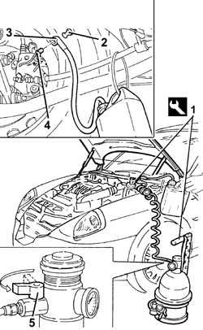

0010T65 HYDRAULIC BRAKING SYSTEM - BLEED AIR
- Path
- Procedures > 00 MAINTENANCE > 0010 NEW UNITS AND MAINTENANCE > 0010T vehicle oil and fluids > 0010T65 HYDRAULIC BRAKING SYSTEM - BLEED AIR
- Kind
- repair procedure (removal / refitting; the operation number is the code)
- Applies to
- all engines; all production periods
- Interactive page
- https://sloeber94.github.io/elrnDB-lThss/en/#/606297
Applies to: all engines; all production periods
- Position the vehicle on the lift.
See in Op. 7040D50 ENGINE COMPARTMENT UPPER SOUND INSULATION SHIELD - R.R.
- Check that the brake/clutch fluid is between the MIN and MAX levels.
- If bleeding is carried out after repairs to the brake pump and ABS control unit, bleed in the following order:
- Left front wheel.
- Right front wheel.
- Left rear wheel.
- Right rear wheel.
- After repairs to the brake calipers, bleed in the following order:
- Brake caliper removed.
- Left front wheel.
- Right front wheel.
- Left rear wheel.
- Right rear wheel.
1. Remove the brake fluid reservoir cap and connect the equipment to the reservoir after having refilled it.
 | Description | Code | Function |
|---|---|---|---|
1 | Bleeding brake system air | 1.806.097.000 | Hydraulic circuit air bleeding equipment. Remove any air present in the braking circuit |
2. Remove the protective cap for the bleed valve on the brake caliper.
3. Connect the recovery device (pipe and reservoir) to the bleed valve(s) on the brake caliper.
4. Open the bleed valve.
5. Open the fluid reservoir tap slowly.
- Wait for all the air in the hydraulic system to escape.
- Close the bleed valve(s) on the brake caliper.
- Repeat the operations described above for the remaining brake calipers.
- Remove the vehicle from the lift.

Applies to: all engines; all production periods
See in Op. 7040D50 ENGINE COMPARTMENT UPPER SOUND INSULATION SHIELD - R.R.
Topics linked from this page (1)
Topics that link to this page (7)
- 0010T66 HYDRAULIC BRAKING SYSTEM - BLEEDING AIR FOR VERSIONS WITH A.B.S.
- 3310A30 FRONT BRAKE CALIPER (one) - R.R. - Includes bleeding air
- 3330C10 MASTER CYLINDER (PUMP) - R.R. - Bleed air from brakes separately
- 3330C30 brake fluid reservoir - r + r and wash inside
- 3340A12 A.B.S. hydraulic and electronic CONTROL UNIT - R.R. - Includes bleeding air
- 3340B52 Rigid PIPE (one), from master cylinder (pump) to A.B.S. hydraulic control unit - R.R.
- 3340B55 RIGID PIPE from hydraulic CONTROL UNIT to LEFT FRONT BRAKE - R.R.